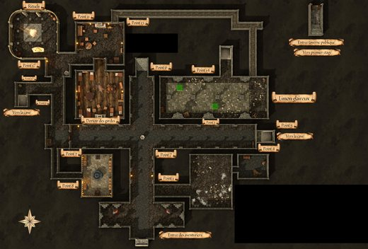

Le château de Canderas (duché de Bromaël)

- Château du duc Ganelon de Bromaël.
- Envahi par les Ouromans. Le duc était assiégé à Canderas.
- Les Ouromans ont détruit les réserves de grain en partant. La famine a été évitée grâce au rituel du Vin de Vanaël.